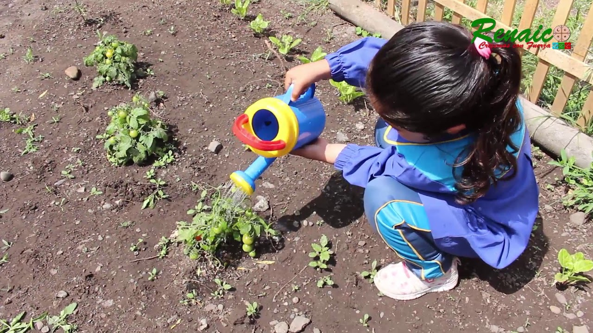

Sistema de Riego
Contamos con un sistema de riego eficiente que garantiza que nuestras plantas reciban la cantidad adecuada de agua. Los niños aprenden sobre la importancia del riego y participan en el cuidado diario de la huerta.

En nuestra huerta, aprendemos a sembrar diferentes tipos de plantas y vegetales. Los niños de inclusión participan activamente en este proceso, desarrollando habilidades prácticas y fomentando la interacción social.
Las huertas sostenibles son una forma de cultivar alimentos de manera respetuosa con el medio ambiente. En nuestra huerta, enseñamos a los niños prácticas sostenibles que ayudan a preservar la biodiversidad y a cuidar nuestro planeta.
Contamos con un sistema de riego eficiente que garantiza que nuestras plantas reciban la cantidad adecuada de agua. Los niños aprenden sobre la importancia del riego y participan en el cuidado diario de la huerta.